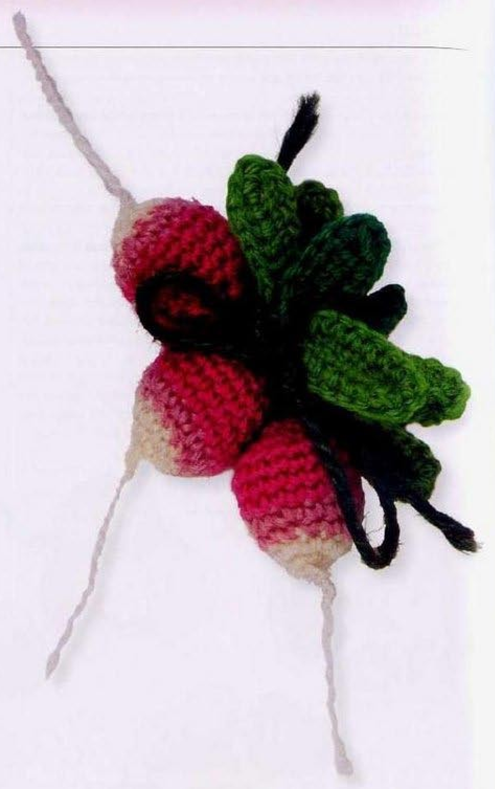
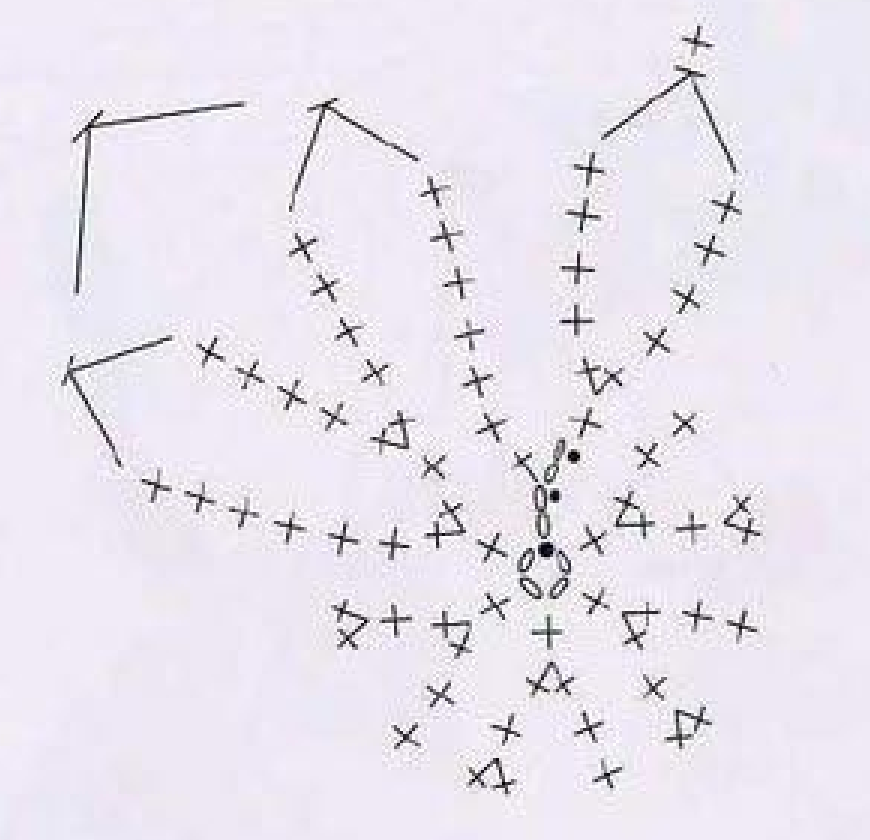
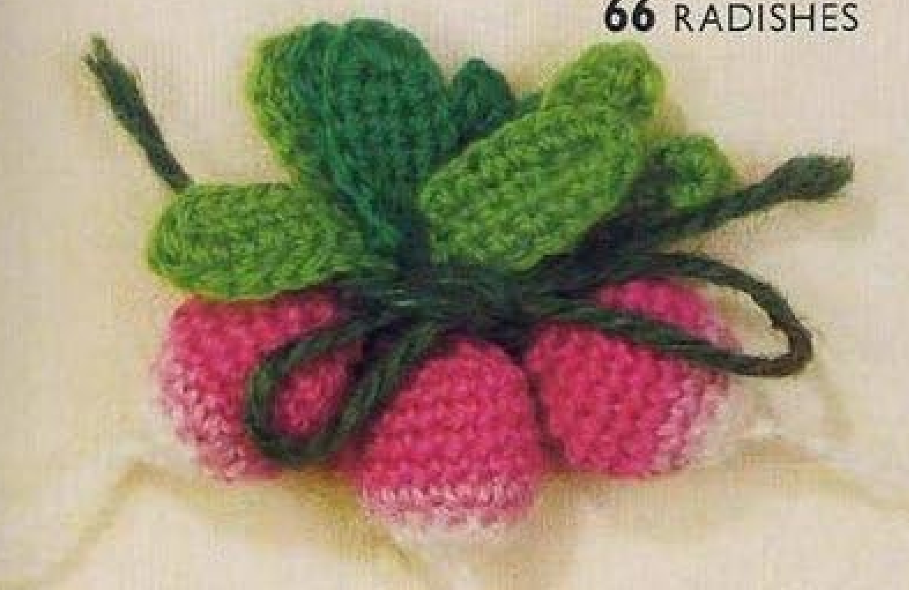

These crochet Radishes have stuffed pink bodies, tapered white lower sections, and three green leaves attached to each finished root. The starting white end is brought to the right side before stuffing, providing the visible root tail. This guide follows pattern 66 in Lesley Stanfield’s 100 Flowers to Knit & Crochet, translating its ten body rounds and separate leaf recipe into US crochet terminology.

Key Takeaways
- Use stranded embroidery wool or 4-ply wool in white, pale pink, deep pink, and two shades of green.
- Leave an approximately 5 cm, 2 inch, white starting end for the root.
- Body counts progress through 6, 12, 18, 9, and 5 positions.
- Add wadding after round 9, before the final decrease round.
- Make three separate green leaves for every radish.
- The photographs show three radishes; repeat the individual recipe as needed.
CROCHET RADISHES PATTERN
Project: One stuffed radish with three green leaves; repeat to make a bunch. The source photos show three. US terms are used below. Hook, gauge, total wool quantity, and finished dimensions are not specified.
| Skill level | Intermediate section in the source. Practical focus: small shaped rounds, color changes, stuffing, and leaf attachment. |
|---|---|
| Base size | 1 radish and 3 leaves per recipe repeat. The photos show a bunch of 3 radishes; dimensions are not specified. |
| Yarn | Stranded embroidery wool or 4-ply wool: white A, pale pink B, deep pink C, and 2 shades of green D. |
| Quantity, hook, gauge | Not specified. Choose a hook suited to the wool and check that the body fabric holds its wadding. |
| Extras | Wadding; scissors and a blunt needle for attaching leaves and securing ends. |
| US abbreviations | ch = chain; sc = single crochet; sc2tog = decrease across 2 stitches; sl st = slip stitch; RS = right side. UK dc = US sc. |
| Foundation | With A, leave an approximately 5 cm, 2 inch, end. Ch 6, skip 3 chains, sl st in the next chain. |
| Round 1, RS | Ch 2, 5 sc in the ring, sl st in the top chain of the starting ch 2. 6 counted positions. |
| Round 2 | Ch 2, sc in the stitch below, 2 sc in each sc. With B, sl st in the top chain of the starting ch 2. 12 counted positions. Continue B. |
| Round 3 | Sc in each stitch. 12 stitches; no new joining rise is printed. |
| Round 4 | [2 sc in the next sc, sc in the next sc] 6 times. 18 stitches. Change to C. |
| Rounds 5–8 | Sc in each sc for 4 rounds, maintaining 18 stitches. |
| Round 9 and stuffing | [Sc2tog across the next 2 sc] 9 times. 9 stitches. Hook the first A end to RS, then insert wadding into the cavity. |
| Round 10 | Sc in the next stitch; [sc2tog across the next 2 stitches] 4 times. 5 stitches. Fasten off. |
| Leaf, make 3 per radish | With D, ch 9, skip 1 chain, sc in each of the next 8 chains. Ch 1; working in the remaining strand of the foundation chain, sc in each of the next 6 chains. Turn. Ch 1, sc in each of the next 5 sc, 3 sc in the ch-1 space, sc in each of the next 6 sc. Fasten off. Attach each leaf to the radish. |
Understand the Body, Root, and Leaves
The radish body starts at its narrow white end and grows through two increase stages. Pale pink forms the transition above the white section, and deep pink continues over the widest part. Two decrease rounds reduce the opening after the main body fabric has been worked.
The retained white starting end is part of the written finishing sequence. It is brought to the right side after the first decrease round and before wadding is inserted. Do not weave it away as an ordinary unwanted end at the beginning, because it provides the visible root detail in the finished photographs.
Each green leaf is a separate flat piece worked on both sides of a short foundation chain. Three are made for each radish and attached after finishing. The source photographs show a gathered bunch of three roots, but the written body directions describe one repeatable radish rather than a mandatory three-body sequence.
Gather Wool, Wadding, and Finishing Tools
The source permits stranded embroidery wool or 4-ply wool. Use white A, pale pink B, deep pink C, and two green shades collectively labeled D. Keep the three body colors arranged in their working order, since the white lower section is followed by pale pink and then deep pink.
The entry does not specify a numerical strand count for embroidery wool, a hook size, a gauge, or an overall quantity. Choose a workable wool thickness and hook combination, then evaluate the small body fabric. It should hold the named wadding without the padding pushing visibly between loose stitch gaps.
Wadding is the supplied extra material. Have it ready before the body reaches its nine-stitch opening, along with scissors and a blunt needle for attaching leaves. The instruction specifies an approximately five-centimeter, two-inch, starting white end; this is an end-length measurement, not a finished radish size.
If you need several roots to match in a decorative bunch, use the same hook and comparable wool for each sample. Complete one body and its leaves before estimating a larger batch. The photographs show arrangement ideas, but they do not supply a measured finished width or a yardage allowance.
US Terms and the Decrease
The book’s UK double crochet becomes US single crochet throughout this entry. Its decrease across the next two doubles therefore becomes a US single-crochet-two-together. No US double, treble, or tall-stitch cluster is required for the body or leaves.
For sc2tog, insert the hook into the first stated stitch and draw up a loop, then insert into the next stitch and draw up another loop. Yarn over and draw through the three loops on the hook. Two consecutive base stitches have been consumed to produce one new top.
Work each decrease over the next two separate stitches. Do not make two singles in one base, which is the earlier increase operation, or skip one base and crochet in the next as a substitute decrease. The written totals depend on paired decreases that retain a compact shaped surface.
Decrease checkpoint: Round 9 uses nine decreases across eighteen stitches. Round 10 uses one single plus four decreases across nine stitches, leaving five.
Step 1: Preserve the White End and Make the Ring
With A, leave an approximately five-centimeter, two-inch, starting end. Chain six, skip three chains, and slip stitch into the next chain. This is the source’s small chain-ring foundation; it is not replaced here with an adjustable ring or a six-chain ring joined into its first chain.
The skip-three direction leaves the small ring at the working end of the chain. Follow the named chain placement so that the foundation and retained end remain together at the radish’s white tip. Keep the retained end free while preparing the first round.
Do not trim or hide that end after making the foundation. Later you will hook it through to the right side before inserting wadding. A small removable marker or a note beside the work can help distinguish this retained root end from the color-change ends that will be secured normally.
Step 2: Work Six Counted Positions in Round 1
With the right side facing, chain two and work five singles into the ring. Slip stitch into the top chain of the starting two-chain rise. The source counts six positions: the rise represents one position and the five actual singles supply the other five.
Keep the little ring opening manageable without pulling the starting end away from the white tip. Because the body is small, its chain-rise top can be easy to confuse with the first actual single. Locate the second chain of the starting rise before closing the round.
Inspect the starting shape and stitch tops now. A clear six-position first round provides the foundation for the doubling operation in round 2. An extra actual single here would affect every later increase and decrease count, so correct it before changing colors.
Step 3: Increase Round 2 and Introduce Pale Pink
Chain two and work one single in the stitch directly below the rise. Work two singles in each of the five actual singles from round 1. The starting rise and single below provide two counted positions; the paired increases provide ten more, giving twelve in total.
With B, slip stitch into the top chain of the starting two-chain rise. Continue with pale pink. This introduces the next color at the closing join rather than making an additional pale-pink increase round or changing halfway through the white doubling sequence.
Check the twelve-position total before moving on. Do not add an extra pair into the previous rise after increasing across the five actual singles. The beginning rise and single below already occupy the first part of the round’s doubling structure.
Early-round checkpoint: Round 1 counts six positions. Round 2 counts twelve through the starting rise, its single below, and paired increases in the five actual singles.

Step 4: Work Pale-Pink Rounds 3 and 4
For round 3, work one single in each stitch, keeping twelve positions around the body. The source no longer prints a new rise or closing join at every round. Track the round boundary as you continue, rather than adding a new chain-two rise to each line by habit.
For round 4, work two singles in the next single and one single in the following single. Repeat that pair six times in total. The six pairs consume the twelve available bases and produce eighteen stitches, expanding the body above its narrower white lower section.
Change to deep pink C after completing the round-4 increases. Preserve the named order of the colors: white rounds 1–2, pale-pink rounds 3–4, then deep pink. Do not move the change to the middle of an increase pair simply to mimic a shaded spot in a photograph.
Step 5: Maintain Eighteen Stitches for Four Rounds
Work rounds 5, 6, 7, and 8 with one single in each single, maintaining eighteen stitches in every round. There are four plain rounds in this deep-pink section. Mark the first position of a round or record each completed circuit so that the fourth one is not accidentally omitted.
These plain rounds develop the widest body area without further increases. Do not add another increase to make the radish rounder, or begin decreases early because the fabric curls into a cavity. That cupping is consistent with a small shaped object being worked in the round.
Compare the stitch count at the boundary of each circuit. If the number changes unexpectedly, inspect for a skipped stitch or an accidental second single in one base. Correcting that earlier error keeps the later nine paired decreases evenly distributed around the body.
Step 6: Reduce to Nine and Reveal the Root End
For round 9, work a single-crochet-two-together across the next two singles nine times. Eighteen bases become nine stitches. Work the decreases consecutively around the body instead of alternating them with extra plain singles, which would give a different total.
After this round, hook the first white end to the right side, as the source directs. Find the retained A end from the foundation before adding padding. Bring it outward at the white tip rather than through the deep-pink upper opening or across the surface of the body.
Once the root end is visible, insert wadding into the cavity. The pattern does not supply a measured amount. Add enough to support the shape without stretching the stitches apart or making the final decrease round difficult to work. Keep the retained white end outside and free of the padding.
The Retained End Has a Planned Finishing Role
The initial white end is deliberately saved until the body has narrowed to nine stitches. Bringing it to the right side before stuffing makes the root detail accessible while the cavity remains open. It is a source construction step, not an extra root chain added after the radish is finished.
Step 7: Complete the Five-Stitch Final Round
For round 10, work one single in the next stitch. Then work a decrease across the next two stitches four times. The first single uses one base and the four decreases use the remaining eight, giving the source’s final total of five stitches.
Fasten off. The entry does not print an additional numerical closing round after these five stitches. Secure the finishing end appropriately without inventing another increase, extra decrease circuit, or separately crocheted cap. Keep enough access to attach the leaves to the finished upper area.
Inspect the stuffing and white root end before trimming ordinary finishing ends. The body should show its three named color sections, a supported cavity, and the retained white end on the right side. Check the final count if the opening looks much larger than expected.
Step 8: Work Both Sides of the Leaf Foundation
Make three leaves for each radish using D. Chain nine, skip the chain nearest the hook, and work one single in each of the next eight chains. These are separate chain bases, not eight singles in one chain space. Keep the remaining strands of the foundation accessible for the opposite side.
Chain one, then work one single in each of the next six chains using the remaining foundation strand. This opposite-side pass is shorter than the first eight-single pass. Do not automatically extend it to all eight chains for symmetry; its six-chain length is part of the printed leaf construction.
Turn after that six-single pass. The next line works around this leaf edge and the one-chain space. Keep the foundation’s shorter return route identifiable, since treating it as a full oval with equal passes would change the leaf’s base and the available edging placements.
Step 9: Edge and Attach Three Leaves
Chain one and work one single in each of the next five singles. Work three singles in the one-chain space, then one single in each of the next six singles. Fasten off. The three-stitch group is concentrated in the named space to shape the end of the leaf.
Complete three leaves for the radish and attach each to the body. The source gives two shades of green but does not prescribe a numerical color split among the three leaves. Use those supplied shades while preserving the same nine-chain foundation and edging recipe for every leaf.
Position the three completed leaves before securing their sewing ends, keeping the pink body and white root visible. The photo’s gathered presentation can guide arrangement, but the written instructions do not add a separate long green stem or a required tying-bow recipe.
Troubleshoot the Shape and Leaf Counts
The body does not narrow correctly
Review the eighteen-stitch plain rounds and the paired decreases. Round 9 should leave nine, and the final single-plus-four-decreases round should leave five. Extra plain stitches between round-9 decreases or a skipped increase earlier can change the closing shape.
The white root end is missing
Check whether the starting end was woven away prematurely or trapped beneath wadding. It is brought to the right side after round 9. Recover it while the opening is accessible rather than cutting a new unrelated tail and assuming that this reproduces the original retained-end construction.
The leaf has a different outline
Compare the first eight-single pass with the shorter six-single opposite pass, then locate the three-single group in the chain-one space. An equal eight-stitch return or a misplaced end group changes the source shape. Count the foundation and placements before stretching the leaf into an oval.

Optional Bunches and Decorative Uses
Repeat the body and three-leaf recipe to make as many radishes as your decorative arrangement needs. A three-radish bunch follows the quantity visible in the source photos, while a different bunch size is a personal choice. Keep the same body rounds and leaf count for each individual radish.
Suggested uses include a textile display or a dimensional accent on a handmade bag. These are added placement ideas, not complete accessory projects in this entry. Test the weight and attachment of a finished stuffed root before adding a whole bunch to a fabric surface.
Variation guidance: Extra stems, bows, embroidered faces, or additional leaves are optional adaptations. Keep the ten-round body, retained white root end, and three-leaf source recipe distinct.
Radishes at a Glance
- White, pale-pink, deep-pink wool and two green shades.
- Ten body rounds with a maximum of eighteen stitches.
- Nine stitches before stuffing and five after the final round.
- A retained five-centimeter starting end forms the root detail.
- Three separately made leaves per radish.
Conclusion
Radishes combines a carefully counted stuffed body with a planned root end and three short-chain leaves. Preserve the white end, complete all four eighteen-stitch plain rounds, and add wadding before the final decrease round. The compact card contains the complete body and leaf recipes in US terms. Click the Pin to see the pattern again and use the charts while making your next little bunch.
Source and Tags
Source: Lesley Stanfield, 100 Flowers to Knit & Crochet, pattern 66 Radishes. Instructions and charts are on printed page 82, PDF page 76; the directory bunch is on printed page 45, PDF page 40. All photos show completed work, with some directory root ends outside the scan. US translation and additional practical guidance accompany the source construction.
Crochet RadishesCrochet VegetablesStuffed CrochetGreen LeavesWool CrochetUS Crochet Terms